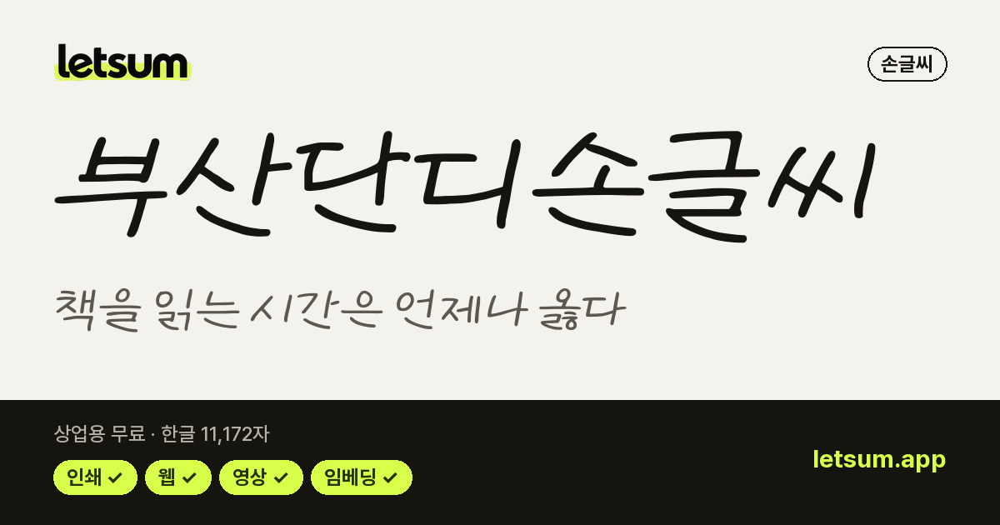
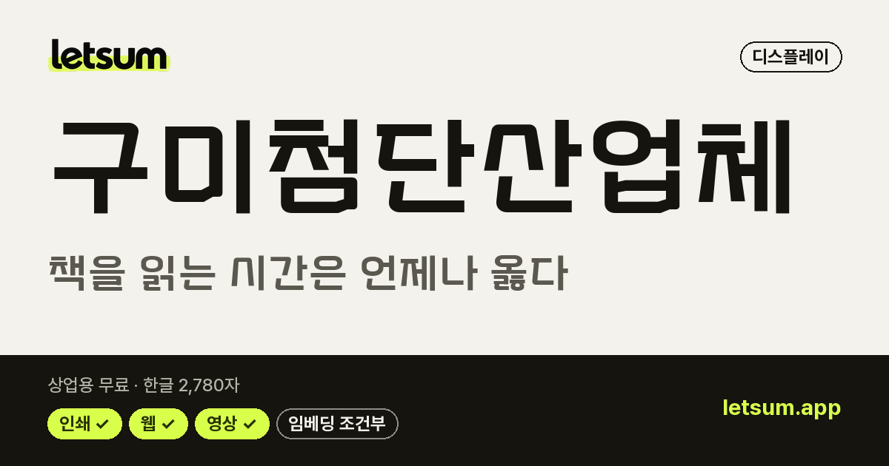
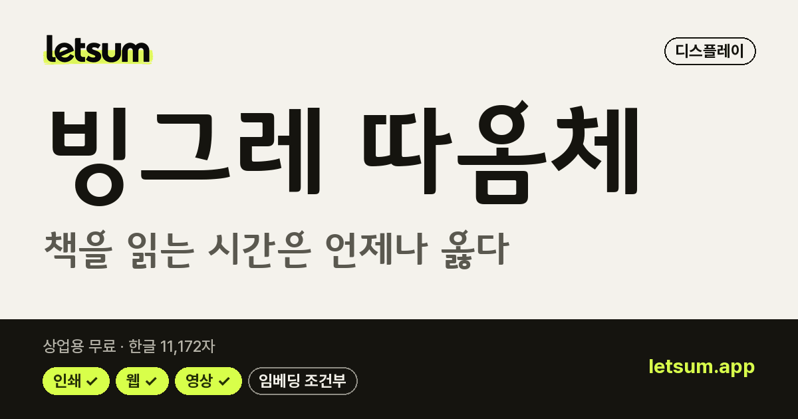
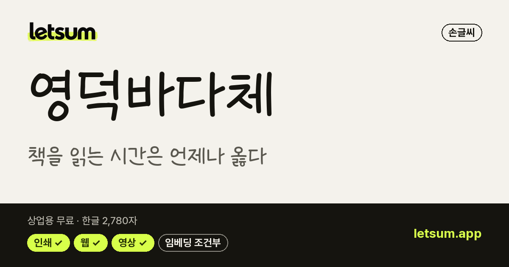

예쁜 감성 폰트 217종
메인 화면에서 이 목록 보기 →내 문장으로 미리보기·비교·필터를 함께 쓸 수 있습니다
LETSUM이 견본을 보고 '따뜻한'·'세련된' 분위기로 분류한 손글씨·제목용 상업용 무료 폰트입니다. 카페 메뉴·청첩장·SNS 감성 문구처럼 분위기가 중요한 곳에 어울립니다.
라이선스 원문 대조 · 다운로드는 원 배포처로 연결 · 목록 갱신 2026-10-27 · 견본 이미지를 누르면 상세 정보와 내 문장 미리보기로 갑니다.
 도현체디스플레이 · 굵기 1종 · 한글 11,172자OFL · 인쇄·웹·영상·BI/CI 가능
도현체디스플레이 · 굵기 1종 · 한글 11,172자OFL · 인쇄·웹·영상·BI/CI 가능 나눔손글씨 펜손글씨 · 굵기 1종 · 한글 2,350자OFL · 인쇄·웹·영상·BI/CI 가능
나눔손글씨 펜손글씨 · 굵기 1종 · 한글 2,350자OFL · 인쇄·웹·영상·BI/CI 가능 싱글데이손글씨 · 굵기 1종 · 한글 2,780자OFL · 인쇄·웹·영상·BI/CI 가능
싱글데이손글씨 · 굵기 1종 · 한글 2,780자OFL · 인쇄·웹·영상·BI/CI 가능 나눔손글씨 붓손글씨 · 굵기 1종 · 한글 11,172자OFL · 인쇄·웹·영상·BI/CI 가능
나눔손글씨 붓손글씨 · 굵기 1종 · 한글 11,172자OFL · 인쇄·웹·영상·BI/CI 가능 ACC어린이하늘맑은체손글씨 · 굵기 1종 · 한글 11,172자공공누리 1유형 · 인쇄·웹·영상·BI/CI 가능
ACC어린이하늘맑은체손글씨 · 굵기 1종 · 한글 11,172자공공누리 1유형 · 인쇄·웹·영상·BI/CI 가능 연성디스플레이 · 굵기 1종 · 한글 11,172자OFL · 인쇄·웹·영상·BI/CI 가능
연성디스플레이 · 굵기 1종 · 한글 11,172자OFL · 인쇄·웹·영상·BI/CI 가능 감자꽃손글씨 · 굵기 1종 · 한글 11,172자OFL · 인쇄·웹·영상·BI/CI 가능
감자꽃손글씨 · 굵기 1종 · 한글 11,172자OFL · 인쇄·웹·영상·BI/CI 가능 푸어스토리손글씨 · 굵기 1종 · 한글 2,780자OFL · 인쇄·웹·영상·BI/CI 가능
푸어스토리손글씨 · 굵기 1종 · 한글 2,780자OFL · 인쇄·웹·영상·BI/CI 가능 모이라이 원디스플레이 · 굵기 1종 · 한글 11,172자OFL · 인쇄·웹·영상·BI/CI 가능
모이라이 원디스플레이 · 굵기 1종 · 한글 11,172자OFL · 인쇄·웹·영상·BI/CI 가능 스타일리시디스플레이 · 굵기 1종 · 한글 11,172자OFL · 인쇄·웹·영상·BI/CI 가능
스타일리시디스플레이 · 굵기 1종 · 한글 11,172자OFL · 인쇄·웹·영상·BI/CI 가능 오르빗디스플레이 · 굵기 1종 · 한글 11,172자OFL · 인쇄·웹·영상·BI/CI 가능
오르빗디스플레이 · 굵기 1종 · 한글 11,172자OFL · 인쇄·웹·영상·BI/CI 가능 동해독도손글씨 · 굵기 1종 · 한글 11,172자OFL · 인쇄·웹·영상·BI/CI 가능
동해독도손글씨 · 굵기 1종 · 한글 11,172자OFL · 인쇄·웹·영상·BI/CI 가능 부산교육다함께고은체손글씨 · 굵기 1종 · 한글 2,792자교육청 무료 이용 · 인쇄·웹·영상·BI/CI 가능
부산교육다함께고은체손글씨 · 굵기 1종 · 한글 2,792자교육청 무료 이용 · 인쇄·웹·영상·BI/CI 가능
부산단디손글씨손글씨 · 굵기 1종 · 한글 11,172자부산시 무료 이용 · 인쇄·웹·영상 가능 빗썸고딕 Original디스플레이 · 굵기 1종 · 한글 2,350자OFL · 인쇄·웹·영상·BI/CI 가능
빗썸고딕 Original디스플레이 · 굵기 1종 · 한글 2,350자OFL · 인쇄·웹·영상·BI/CI 가능 코트라 희망체손글씨 · 굵기 1종 · 한글 11,172자공공누리 1유형 · 인쇄·웹·영상·BI/CI 가능
코트라 희망체손글씨 · 굵기 1종 · 한글 11,172자공공누리 1유형 · 인쇄·웹·영상·BI/CI 가능 Tlab신영복체손글씨 · 굵기 1종 · 한글 2,666자OFL · 인쇄·웹·영상·BI/CI 가능
Tlab신영복체손글씨 · 굵기 1종 · 한글 2,666자OFL · 인쇄·웹·영상·BI/CI 가능 코트라 손글씨체손글씨 · 굵기 1종 · 한글 2,453자공공누리 1유형 · 인쇄·웹·영상·BI/CI 가능
코트라 손글씨체손글씨 · 굵기 1종 · 한글 2,453자공공누리 1유형 · 인쇄·웹·영상·BI/CI 가능 카페24 고운밤손글씨 · 굵기 1종 · 한글 11,172자OFL · 인쇄·웹·영상·BI/CI 가능
카페24 고운밤손글씨 · 굵기 1종 · 한글 11,172자OFL · 인쇄·웹·영상·BI/CI 가능 카페24 클래식타입디스플레이 · 굵기 1종 · 한글 11,172자OFL · 인쇄·웹·영상·BI/CI 가능
카페24 클래식타입디스플레이 · 굵기 1종 · 한글 11,172자OFL · 인쇄·웹·영상·BI/CI 가능 KCC은영체손글씨 · 굵기 1종 · 한글 2,666자OFL · 인쇄·웹·영상·BI/CI 가능
KCC은영체손글씨 · 굵기 1종 · 한글 2,666자OFL · 인쇄·웹·영상·BI/CI 가능 양평군체디스플레이 · 굵기 1종 · 한글 11,172자공공누리 1유형 · 인쇄·웹·영상·BI/CI 가능
양평군체디스플레이 · 굵기 1종 · 한글 11,172자공공누리 1유형 · 인쇄·웹·영상·BI/CI 가능 상주다정다감체손글씨 · 굵기 1종 · 한글 2,350자공공누리 1유형 · 인쇄·웹·영상·BI/CI 가능
상주다정다감체손글씨 · 굵기 1종 · 한글 2,350자공공누리 1유형 · 인쇄·웹·영상·BI/CI 가능 Mapo마포나루손글씨 · 굵기 1종 · 한글 2,790자공공누리 1유형 · 인쇄·웹·영상·BI/CI 가능
Mapo마포나루손글씨 · 굵기 1종 · 한글 2,790자공공누리 1유형 · 인쇄·웹·영상·BI/CI 가능 가비아 봄바람체손글씨 · 굵기 1종 · 한글 2,350자OFL · 인쇄·웹·영상·BI/CI 가능
가비아 봄바람체손글씨 · 굵기 1종 · 한글 2,350자OFL · 인쇄·웹·영상·BI/CI 가능 나눔바른펜손글씨 · 굵기 2종 · 한글 11,172자OFL · 인쇄·웹·영상·BI/CI 가능
나눔바른펜손글씨 · 굵기 2종 · 한글 11,172자OFL · 인쇄·웹·영상·BI/CI 가능 도봉옛길체손글씨 · 굵기 1종 · 한글 2,780자공공누리 1유형 · 인쇄·웹·영상·BI/CI 가능
도봉옛길체손글씨 · 굵기 1종 · 한글 2,780자공공누리 1유형 · 인쇄·웹·영상·BI/CI 가능 마비옛체디스플레이 · 굵기 1종 · 한글 11,172자넥슨 무료 이용 · 인쇄·웹·영상 가능
마비옛체디스플레이 · 굵기 1종 · 한글 11,172자넥슨 무료 이용 · 인쇄·웹·영상 가능 상주경천섬체디스플레이 · 굵기 1종 · 한글 2,350자공공누리 1유형 · 인쇄·웹·영상·BI/CI 가능
상주경천섬체디스플레이 · 굵기 1종 · 한글 2,350자공공누리 1유형 · 인쇄·웹·영상·BI/CI 가능 카페24 슈퍼매직디스플레이 · 굵기 2종 · 한글 11,172자OFL · 인쇄·웹·영상·BI/CI 가능
카페24 슈퍼매직디스플레이 · 굵기 2종 · 한글 11,172자OFL · 인쇄·웹·영상·BI/CI 가능 KCC정범체손글씨 · 굵기 1종 · 한글 11,172자OFL · 인쇄·웹·영상·BI/CI 가능
KCC정범체손글씨 · 굵기 1종 · 한글 11,172자OFL · 인쇄·웹·영상·BI/CI 가능 KCC김환기체손글씨 · 굵기 1종 · 한글 11,172자OFL · 인쇄·웹·영상·BI/CI 가능
KCC김환기체손글씨 · 굵기 1종 · 한글 11,172자OFL · 인쇄·웹·영상·BI/CI 가능 달서달링체손글씨 · 굵기 1종 · 한글 2,780자공공누리 1유형 · 인쇄·웹·영상·BI/CI 가능
달서달링체손글씨 · 굵기 1종 · 한글 2,780자공공누리 1유형 · 인쇄·웹·영상·BI/CI 가능 한국기계연구원L디스플레이 · 굵기 2종 · 한글 2,350자공공누리 1유형 · 인쇄·웹·영상·BI/CI 가능
한국기계연구원L디스플레이 · 굵기 2종 · 한글 2,350자공공누리 1유형 · 인쇄·웹·영상·BI/CI 가능 온글잎 의청수 재선체손글씨 · 굵기 1종 · 한글 2,786자OFL · 인쇄·웹·영상·BI/CI 가능
온글잎 의청수 재선체손글씨 · 굵기 1종 · 한글 2,786자OFL · 인쇄·웹·영상·BI/CI 가능 학교안심 꼬꼬마손글씨 · 굵기 1종 · 한글 2,780자OFL · 인쇄·웹·영상·BI/CI 가능
학교안심 꼬꼬마손글씨 · 굵기 1종 · 한글 2,780자OFL · 인쇄·웹·영상·BI/CI 가능 학교안심 모험가디스플레이 · 굵기 2종 · 한글 2,780자OFL · 인쇄·웹·영상·BI/CI 가능
학교안심 모험가디스플레이 · 굵기 2종 · 한글 2,780자OFL · 인쇄·웹·영상·BI/CI 가능 학교안심 우산손글씨 · 굵기 1종 · 한글 2,350자OFL · 인쇄·웹·영상·BI/CI 가능
학교안심 우산손글씨 · 굵기 1종 · 한글 2,350자OFL · 인쇄·웹·영상·BI/CI 가능 학교안심 은하수손글씨 · 굵기 1종 · 한글 2,780자OFL · 인쇄·웹·영상·BI/CI 가능
학교안심 은하수손글씨 · 굵기 1종 · 한글 2,780자OFL · 인쇄·웹·영상·BI/CI 가능 온글잎 의청수 주빈체손글씨 · 굵기 1종 · 한글 2,786자OFL · 인쇄·웹·영상·BI/CI 가능
온글잎 의청수 주빈체손글씨 · 굵기 1종 · 한글 2,786자OFL · 인쇄·웹·영상·BI/CI 가능 학교안심 돋보기디스플레이 · 굵기 1종 · 한글 2,780자OFL · 인쇄·웹·영상·BI/CI 가능
학교안심 돋보기디스플레이 · 굵기 1종 · 한글 2,780자OFL · 인쇄·웹·영상·BI/CI 가능 학교안심 운동장디스플레이 · 굵기 1종 · 한글 2,350자OFL · 인쇄·웹·영상·BI/CI 가능
학교안심 운동장디스플레이 · 굵기 1종 · 한글 2,350자OFL · 인쇄·웹·영상·BI/CI 가능 KCC손기정체손글씨 · 굵기 1종 · 한글 11,172자OFL · 인쇄·웹·영상·BI/CI 가능강원교육새음체강원교육새음체손글씨 · 굵기 1종 · 한글 10,714자강원교육청 무료 이용 · 인쇄·웹·영상·BI/CI 가능
KCC손기정체손글씨 · 굵기 1종 · 한글 11,172자OFL · 인쇄·웹·영상·BI/CI 가능강원교육새음체강원교육새음체손글씨 · 굵기 1종 · 한글 10,714자강원교육청 무료 이용 · 인쇄·웹·영상·BI/CI 가능 강원교육현옥샘체손글씨 · 굵기 1종 · 한글 11,172자강원교육청 무료 이용 · 인쇄·웹·영상·BI/CI 가능
강원교육현옥샘체손글씨 · 굵기 1종 · 한글 11,172자강원교육청 무료 이용 · 인쇄·웹·영상·BI/CI 가능 교보 손글씨 2019손글씨 · 굵기 1종 · 한글 11,172자교보 손글씨 무료 이용 · 인쇄·웹·영상·BI/CI 가능
교보 손글씨 2019손글씨 · 굵기 1종 · 한글 11,172자교보 손글씨 무료 이용 · 인쇄·웹·영상·BI/CI 가능 교보 손글씨 2020 박도연손글씨 · 굵기 1종 · 한글 11,172자교보 손글씨 무료 이용 · 인쇄·웹·영상·BI/CI 가능
교보 손글씨 2020 박도연손글씨 · 굵기 1종 · 한글 11,172자교보 손글씨 무료 이용 · 인쇄·웹·영상·BI/CI 가능 교보 손글씨 2021 성지영손글씨 · 굵기 1종 · 한글 11,172자교보 손글씨 무료 이용 · 인쇄·웹·영상·BI/CI 가능
교보 손글씨 2021 성지영손글씨 · 굵기 1종 · 한글 11,172자교보 손글씨 무료 이용 · 인쇄·웹·영상·BI/CI 가능 교보 손글씨 2022 김혜남손글씨 · 굵기 1종 · 한글 11,172자교보 손글씨 무료 이용 · 인쇄·웹·영상·BI/CI 가능
교보 손글씨 2022 김혜남손글씨 · 굵기 1종 · 한글 11,172자교보 손글씨 무료 이용 · 인쇄·웹·영상·BI/CI 가능 교보 손글씨 2023 우선아손글씨 · 굵기 1종 · 한글 11,172자교보 손글씨 무료 이용 · 인쇄·웹·영상·BI/CI 가능
교보 손글씨 2023 우선아손글씨 · 굵기 1종 · 한글 11,172자교보 손글씨 무료 이용 · 인쇄·웹·영상·BI/CI 가능 교보 손글씨 2024 박서우손글씨 · 굵기 1종 · 한글 11,172자교보 손글씨 무료 이용 · 인쇄·웹·영상·BI/CI 가능
교보 손글씨 2024 박서우손글씨 · 굵기 1종 · 한글 11,172자교보 손글씨 무료 이용 · 인쇄·웹·영상·BI/CI 가능 교보 손글씨 2025 이유빈손글씨 · 굵기 1종 · 한글 11,172자교보 손글씨 무료 이용 · 인쇄·웹·영상·BI/CI 가능
교보 손글씨 2025 이유빈손글씨 · 굵기 1종 · 한글 11,172자교보 손글씨 무료 이용 · 인쇄·웹·영상·BI/CI 가능
구미첨단산업체디스플레이 · 굵기 1종 · 한글 2,780자구미시 무료 이용 · 인쇄·웹·영상 가능 국립공원 꼬미손글씨 · 굵기 1종 · 한글 2,810자공공누리 1유형 · 인쇄·웹·영상·BI/CI 가능
국립공원 꼬미손글씨 · 굵기 1종 · 한글 2,810자공공누리 1유형 · 인쇄·웹·영상·BI/CI 가능 나눔손글씨 가람연꽃손글씨 · 굵기 1종 · 한글 11,172자OFL · 인쇄·웹·영상·BI/CI 가능
나눔손글씨 가람연꽃손글씨 · 굵기 1종 · 한글 11,172자OFL · 인쇄·웹·영상·BI/CI 가능 나눔손글씨 갈맷글손글씨 · 굵기 1종 · 한글 11,172자OFL · 인쇄·웹·영상·BI/CI 가능
나눔손글씨 갈맷글손글씨 · 굵기 1종 · 한글 11,172자OFL · 인쇄·웹·영상·BI/CI 가능 나눔손글씨 강부장님체손글씨 · 굵기 1종 · 한글 11,172자OFL · 인쇄·웹·영상·BI/CI 가능
나눔손글씨 강부장님체손글씨 · 굵기 1종 · 한글 11,172자OFL · 인쇄·웹·영상·BI/CI 가능 나눔손글씨 강인한 위로손글씨 · 굵기 1종 · 한글 11,172자OFL · 인쇄·웹·영상·BI/CI 가능
나눔손글씨 강인한 위로손글씨 · 굵기 1종 · 한글 11,172자OFL · 인쇄·웹·영상·BI/CI 가능 나눔손글씨 고딕 아니고 고딩손글씨 · 굵기 1종 · 한글 11,172자OFL · 인쇄·웹·영상·BI/CI 가능
나눔손글씨 고딕 아니고 고딩손글씨 · 굵기 1종 · 한글 11,172자OFL · 인쇄·웹·영상·BI/CI 가능 나눔손글씨 고려글꼴손글씨 · 굵기 1종 · 한글 11,172자OFL · 인쇄·웹·영상·BI/CI 가능
나눔손글씨 고려글꼴손글씨 · 굵기 1종 · 한글 11,172자OFL · 인쇄·웹·영상·BI/CI 가능 나눔손글씨 곰신체손글씨 · 굵기 1종 · 한글 11,172자OFL · 인쇄·웹·영상·BI/CI 가능
나눔손글씨 곰신체손글씨 · 굵기 1종 · 한글 11,172자OFL · 인쇄·웹·영상·BI/CI 가능 나눔손글씨 규리의 일기손글씨 · 굵기 1종 · 한글 11,172자OFL · 인쇄·웹·영상·BI/CI 가능
나눔손글씨 규리의 일기손글씨 · 굵기 1종 · 한글 11,172자OFL · 인쇄·웹·영상·BI/CI 가능 나눔손글씨 금은보화손글씨 · 굵기 1종 · 한글 11,172자OFL · 인쇄·웹·영상·BI/CI 가능
나눔손글씨 금은보화손글씨 · 굵기 1종 · 한글 11,172자OFL · 인쇄·웹·영상·BI/CI 가능 나눔손글씨 기쁨밝음손글씨 · 굵기 1종 · 한글 11,172자OFL · 인쇄·웹·영상·BI/CI 가능
나눔손글씨 기쁨밝음손글씨 · 굵기 1종 · 한글 11,172자OFL · 인쇄·웹·영상·BI/CI 가능 나눔손글씨 김유이체손글씨 · 굵기 1종 · 한글 11,172자OFL · 인쇄·웹·영상·BI/CI 가능
나눔손글씨 김유이체손글씨 · 굵기 1종 · 한글 11,172자OFL · 인쇄·웹·영상·BI/CI 가능 나눔손글씨 꽃내음손글씨 · 굵기 1종 · 한글 11,172자OFL · 인쇄·웹·영상·BI/CI 가능
나눔손글씨 꽃내음손글씨 · 굵기 1종 · 한글 11,172자OFL · 인쇄·웹·영상·BI/CI 가능 나눔손글씨 끄트머리체손글씨 · 굵기 1종 · 한글 11,172자OFL · 인쇄·웹·영상·BI/CI 가능
나눔손글씨 끄트머리체손글씨 · 굵기 1종 · 한글 11,172자OFL · 인쇄·웹·영상·BI/CI 가능 나눔손글씨 나는 이겨낸다손글씨 · 굵기 1종 · 한글 11,172자OFL · 인쇄·웹·영상·BI/CI 가능
나눔손글씨 나는 이겨낸다손글씨 · 굵기 1종 · 한글 11,172자OFL · 인쇄·웹·영상·BI/CI 가능 나눔손글씨 나무정원손글씨 · 굵기 1종 · 한글 11,172자OFL · 인쇄·웹·영상·BI/CI 가능
나눔손글씨 나무정원손글씨 · 굵기 1종 · 한글 11,172자OFL · 인쇄·웹·영상·BI/CI 가능 나눔손글씨 나의 아내 손글씨손글씨 · 굵기 1종 · 한글 11,172자OFL · 인쇄·웹·영상·BI/CI 가능
나눔손글씨 나의 아내 손글씨손글씨 · 굵기 1종 · 한글 11,172자OFL · 인쇄·웹·영상·BI/CI 가능 나눔손글씨 노력하는 동희손글씨 · 굵기 1종 · 한글 11,172자OFL · 인쇄·웹·영상·BI/CI 가능
나눔손글씨 노력하는 동희손글씨 · 굵기 1종 · 한글 11,172자OFL · 인쇄·웹·영상·BI/CI 가능 나눔손글씨 느릿느릿체손글씨 · 굵기 1종 · 한글 11,172자OFL · 인쇄·웹·영상·BI/CI 가능
나눔손글씨 느릿느릿체손글씨 · 굵기 1종 · 한글 11,172자OFL · 인쇄·웹·영상·BI/CI 가능 나눔손글씨 다시 시작해손글씨 · 굵기 1종 · 한글 11,172자OFL · 인쇄·웹·영상·BI/CI 가능
나눔손글씨 다시 시작해손글씨 · 굵기 1종 · 한글 11,172자OFL · 인쇄·웹·영상·BI/CI 가능 나눔손글씨 다진체손글씨 · 굵기 1종 · 한글 11,172자OFL · 인쇄·웹·영상·BI/CI 가능
나눔손글씨 다진체손글씨 · 굵기 1종 · 한글 11,172자OFL · 인쇄·웹·영상·BI/CI 가능 나눔손글씨 다채사랑손글씨 · 굵기 1종 · 한글 11,172자OFL · 인쇄·웹·영상·BI/CI 가능
나눔손글씨 다채사랑손글씨 · 굵기 1종 · 한글 11,172자OFL · 인쇄·웹·영상·BI/CI 가능 나눔손글씨 다행체손글씨 · 굵기 1종 · 한글 11,172자OFL · 인쇄·웹·영상·BI/CI 가능
나눔손글씨 다행체손글씨 · 굵기 1종 · 한글 11,172자OFL · 인쇄·웹·영상·BI/CI 가능 나눔손글씨 달의궤도손글씨 · 굵기 1종 · 한글 11,172자OFL · 인쇄·웹·영상·BI/CI 가능
나눔손글씨 달의궤도손글씨 · 굵기 1종 · 한글 11,172자OFL · 인쇄·웹·영상·BI/CI 가능 나눔손글씨 대광유리손글씨 · 굵기 1종 · 한글 11,172자OFL · 인쇄·웹·영상·BI/CI 가능
나눔손글씨 대광유리손글씨 · 굵기 1종 · 한글 11,172자OFL · 인쇄·웹·영상·BI/CI 가능 나눔손글씨 대한민국 열사체손글씨 · 굵기 1종 · 한글 11,172자OFL · 인쇄·웹·영상·BI/CI 가능
나눔손글씨 대한민국 열사체손글씨 · 굵기 1종 · 한글 11,172자OFL · 인쇄·웹·영상·BI/CI 가능 나눔손글씨 동화또박손글씨 · 굵기 1종 · 한글 11,172자OFL · 인쇄·웹·영상·BI/CI 가능
나눔손글씨 동화또박손글씨 · 굵기 1종 · 한글 11,172자OFL · 인쇄·웹·영상·BI/CI 가능 나눔손글씨 둥근인연손글씨 · 굵기 1종 · 한글 11,172자OFL · 인쇄·웹·영상·BI/CI 가능
나눔손글씨 둥근인연손글씨 · 굵기 1종 · 한글 11,172자OFL · 인쇄·웹·영상·BI/CI 가능 나눔손글씨 따뜻한 작별손글씨 · 굵기 1종 · 한글 11,172자OFL · 인쇄·웹·영상·BI/CI 가능
나눔손글씨 따뜻한 작별손글씨 · 굵기 1종 · 한글 11,172자OFL · 인쇄·웹·영상·BI/CI 가능 나눔손글씨 따악단단손글씨 · 굵기 1종 · 한글 11,172자OFL · 인쇄·웹·영상·BI/CI 가능
나눔손글씨 따악단단손글씨 · 굵기 1종 · 한글 11,172자OFL · 인쇄·웹·영상·BI/CI 가능 나눔손글씨 딸에게 엄마가손글씨 · 굵기 1종 · 한글 11,172자OFL · 인쇄·웹·영상·BI/CI 가능
나눔손글씨 딸에게 엄마가손글씨 · 굵기 1종 · 한글 11,172자OFL · 인쇄·웹·영상·BI/CI 가능 나눔손글씨 또박또박손글씨 · 굵기 1종 · 한글 11,172자OFL · 인쇄·웹·영상·BI/CI 가능
나눔손글씨 또박또박손글씨 · 굵기 1종 · 한글 11,172자OFL · 인쇄·웹·영상·BI/CI 가능 나눔손글씨 마고체손글씨 · 굵기 1종 · 한글 11,172자OFL · 인쇄·웹·영상·BI/CI 가능
나눔손글씨 마고체손글씨 · 굵기 1종 · 한글 11,172자OFL · 인쇄·웹·영상·BI/CI 가능 나눔손글씨 맛있는체손글씨 · 굵기 1종 · 한글 11,172자OFL · 인쇄·웹·영상·BI/CI 가능
나눔손글씨 맛있는체손글씨 · 굵기 1종 · 한글 11,172자OFL · 인쇄·웹·영상·BI/CI 가능 나눔손글씨 몽돌손글씨 · 굵기 1종 · 한글 11,172자OFL · 인쇄·웹·영상·BI/CI 가능
나눔손글씨 몽돌손글씨 · 굵기 1종 · 한글 11,172자OFL · 인쇄·웹·영상·BI/CI 가능 나눔손글씨 무궁화손글씨 · 굵기 1종 · 한글 11,172자OFL · 인쇄·웹·영상·BI/CI 가능
나눔손글씨 무궁화손글씨 · 굵기 1종 · 한글 11,172자OFL · 인쇄·웹·영상·BI/CI 가능 나눔손글씨 무진장체손글씨 · 굵기 1종 · 한글 11,172자OFL · 인쇄·웹·영상·BI/CI 가능
나눔손글씨 무진장체손글씨 · 굵기 1종 · 한글 11,172자OFL · 인쇄·웹·영상·BI/CI 가능 나눔손글씨 미니 손글씨손글씨 · 굵기 1종 · 한글 11,172자OFL · 인쇄·웹·영상·BI/CI 가능
나눔손글씨 미니 손글씨손글씨 · 굵기 1종 · 한글 11,172자OFL · 인쇄·웹·영상·BI/CI 가능 나눔손글씨 미래나무손글씨 · 굵기 1종 · 한글 11,172자OFL · 인쇄·웹·영상·BI/CI 가능
나눔손글씨 미래나무손글씨 · 굵기 1종 · 한글 11,172자OFL · 인쇄·웹·영상·BI/CI 가능 나눔손글씨 바른정신손글씨 · 굵기 1종 · 한글 11,172자OFL · 인쇄·웹·영상·BI/CI 가능
나눔손글씨 바른정신손글씨 · 굵기 1종 · 한글 11,172자OFL · 인쇄·웹·영상·BI/CI 가능 나눔손글씨 바른히피손글씨 · 굵기 1종 · 한글 11,172자OFL · 인쇄·웹·영상·BI/CI 가능
나눔손글씨 바른히피손글씨 · 굵기 1종 · 한글 11,172자OFL · 인쇄·웹·영상·BI/CI 가능 나눔손글씨 반짝반짝 별손글씨 · 굵기 1종 · 한글 11,172자OFL · 인쇄·웹·영상·BI/CI 가능
나눔손글씨 반짝반짝 별손글씨 · 굵기 1종 · 한글 11,172자OFL · 인쇄·웹·영상·BI/CI 가능 나눔손글씨 배은혜체손글씨 · 굵기 1종 · 한글 11,172자OFL · 인쇄·웹·영상·BI/CI 가능
나눔손글씨 배은혜체손글씨 · 굵기 1종 · 한글 11,172자OFL · 인쇄·웹·영상·BI/CI 가능 나눔손글씨 백의의 천사손글씨 · 굵기 1종 · 한글 11,172자OFL · 인쇄·웹·영상·BI/CI 가능
나눔손글씨 백의의 천사손글씨 · 굵기 1종 · 한글 11,172자OFL · 인쇄·웹·영상·BI/CI 가능 나눔손글씨 버드나무손글씨 · 굵기 1종 · 한글 11,172자OFL · 인쇄·웹·영상·BI/CI 가능
나눔손글씨 버드나무손글씨 · 굵기 1종 · 한글 11,172자OFL · 인쇄·웹·영상·BI/CI 가능 나눔손글씨 범솜체손글씨 · 굵기 1종 · 한글 11,172자OFL · 인쇄·웹·영상·BI/CI 가능
나눔손글씨 범솜체손글씨 · 굵기 1종 · 한글 11,172자OFL · 인쇄·웹·영상·BI/CI 가능 나눔손글씨 부장님 눈치체손글씨 · 굵기 1종 · 한글 11,172자OFL · 인쇄·웹·영상·BI/CI 가능
나눔손글씨 부장님 눈치체손글씨 · 굵기 1종 · 한글 11,172자OFL · 인쇄·웹·영상·BI/CI 가능 나눔손글씨 북극성손글씨 · 굵기 1종 · 한글 11,172자OFL · 인쇄·웹·영상·BI/CI 가능
나눔손글씨 북극성손글씨 · 굵기 1종 · 한글 11,172자OFL · 인쇄·웹·영상·BI/CI 가능 나눔손글씨 비상체손글씨 · 굵기 1종 · 한글 11,172자OFL · 인쇄·웹·영상·BI/CI 가능
나눔손글씨 비상체손글씨 · 굵기 1종 · 한글 11,172자OFL · 인쇄·웹·영상·BI/CI 가능 나눔손글씨 빵구니맘 손글씨손글씨 · 굵기 1종 · 한글 11,172자OFL · 인쇄·웹·영상·BI/CI 가능
나눔손글씨 빵구니맘 손글씨손글씨 · 굵기 1종 · 한글 11,172자OFL · 인쇄·웹·영상·BI/CI 가능 나눔손글씨 사랑해 아들손글씨 · 굵기 1종 · 한글 11,172자OFL · 인쇄·웹·영상·BI/CI 가능
나눔손글씨 사랑해 아들손글씨 · 굵기 1종 · 한글 11,172자OFL · 인쇄·웹·영상·BI/CI 가능 나눔손글씨 상해찬미체손글씨 · 굵기 1종 · 한글 11,172자OFL · 인쇄·웹·영상·BI/CI 가능
나눔손글씨 상해찬미체손글씨 · 굵기 1종 · 한글 11,172자OFL · 인쇄·웹·영상·BI/CI 가능 나눔손글씨 성실체손글씨 · 굵기 1종 · 한글 11,172자OFL · 인쇄·웹·영상·BI/CI 가능
나눔손글씨 성실체손글씨 · 굵기 1종 · 한글 11,172자OFL · 인쇄·웹·영상·BI/CI 가능 나눔손글씨 세계적인 한글손글씨 · 굵기 1종 · 한글 11,172자OFL · 인쇄·웹·영상·BI/CI 가능
나눔손글씨 세계적인 한글손글씨 · 굵기 1종 · 한글 11,172자OFL · 인쇄·웹·영상·BI/CI 가능 나눔손글씨 세아체손글씨 · 굵기 1종 · 한글 11,172자OFL · 인쇄·웹·영상·BI/CI 가능
나눔손글씨 세아체손글씨 · 굵기 1종 · 한글 11,172자OFL · 인쇄·웹·영상·BI/CI 가능 나눔손글씨 세화체손글씨 · 굵기 1종 · 한글 11,172자OFL · 인쇄·웹·영상·BI/CI 가능
나눔손글씨 세화체손글씨 · 굵기 1종 · 한글 11,172자OFL · 인쇄·웹·영상·BI/CI 가능 나눔손글씨 소미체손글씨 · 굵기 1종 · 한글 11,172자OFL · 인쇄·웹·영상·BI/CI 가능
나눔손글씨 소미체손글씨 · 굵기 1종 · 한글 11,172자OFL · 인쇄·웹·영상·BI/CI 가능 나눔손글씨 소방관의 기도손글씨 · 굵기 1종 · 한글 11,172자OFL · 인쇄·웹·영상·BI/CI 가능
나눔손글씨 소방관의 기도손글씨 · 굵기 1종 · 한글 11,172자OFL · 인쇄·웹·영상·BI/CI 가능 나눔손글씨 손편지체손글씨 · 굵기 1종 · 한글 11,172자OFL · 인쇄·웹·영상·BI/CI 가능
나눔손글씨 손편지체손글씨 · 굵기 1종 · 한글 11,172자OFL · 인쇄·웹·영상·BI/CI 가능 나눔손글씨 수줍은 대학생손글씨 · 굵기 1종 · 한글 11,172자OFL · 인쇄·웹·영상·BI/CI 가능
나눔손글씨 수줍은 대학생손글씨 · 굵기 1종 · 한글 11,172자OFL · 인쇄·웹·영상·BI/CI 가능 나눔손글씨 시우 귀여워손글씨 · 굵기 1종 · 한글 11,172자OFL · 인쇄·웹·영상·BI/CI 가능
나눔손글씨 시우 귀여워손글씨 · 굵기 1종 · 한글 11,172자OFL · 인쇄·웹·영상·BI/CI 가능 나눔손글씨 신혼부부손글씨 · 굵기 1종 · 한글 11,172자OFL · 인쇄·웹·영상·BI/CI 가능
나눔손글씨 신혼부부손글씨 · 굵기 1종 · 한글 11,172자OFL · 인쇄·웹·영상·BI/CI 가능 나눔손글씨 아기사랑체손글씨 · 굵기 1종 · 한글 11,172자OFL · 인쇄·웹·영상·BI/CI 가능
나눔손글씨 아기사랑체손글씨 · 굵기 1종 · 한글 11,172자OFL · 인쇄·웹·영상·BI/CI 가능 나눔손글씨 아름드리 꽃나무손글씨 · 굵기 1종 · 한글 11,172자OFL · 인쇄·웹·영상·BI/CI 가능
나눔손글씨 아름드리 꽃나무손글씨 · 굵기 1종 · 한글 11,172자OFL · 인쇄·웹·영상·BI/CI 가능 나눔손글씨 아빠글씨손글씨 · 굵기 1종 · 한글 11,172자OFL · 인쇄·웹·영상·BI/CI 가능
나눔손글씨 아빠글씨손글씨 · 굵기 1종 · 한글 11,172자OFL · 인쇄·웹·영상·BI/CI 가능 나눔손글씨 아빠의 연애편지손글씨 · 굵기 1종 · 한글 11,172자OFL · 인쇄·웹·영상·BI/CI 가능
나눔손글씨 아빠의 연애편지손글씨 · 굵기 1종 · 한글 11,172자OFL · 인쇄·웹·영상·BI/CI 가능 나눔손글씨 아인맘 손글씨손글씨 · 굵기 1종 · 한글 11,172자OFL · 인쇄·웹·영상·BI/CI 가능
나눔손글씨 아인맘 손글씨손글씨 · 굵기 1종 · 한글 11,172자OFL · 인쇄·웹·영상·BI/CI 가능 나눔손글씨 아줌마 자유손글씨 · 굵기 1종 · 한글 11,172자OFL · 인쇄·웹·영상·BI/CI 가능
나눔손글씨 아줌마 자유손글씨 · 굵기 1종 · 한글 11,172자OFL · 인쇄·웹·영상·BI/CI 가능 나눔손글씨 안쌍체손글씨 · 굵기 1종 · 한글 11,172자OFL · 인쇄·웹·영상·BI/CI 가능
나눔손글씨 안쌍체손글씨 · 굵기 1종 · 한글 11,172자OFL · 인쇄·웹·영상·BI/CI 가능 나눔손글씨 암스테르담손글씨 · 굵기 1종 · 한글 11,172자OFL · 인쇄·웹·영상·BI/CI 가능
나눔손글씨 암스테르담손글씨 · 굵기 1종 · 한글 11,172자OFL · 인쇄·웹·영상·BI/CI 가능 나눔손글씨 야근하는 김주임손글씨 · 굵기 1종 · 한글 11,172자OFL · 인쇄·웹·영상·BI/CI 가능
나눔손글씨 야근하는 김주임손글씨 · 굵기 1종 · 한글 11,172자OFL · 인쇄·웹·영상·BI/CI 가능 나눔손글씨 야채장수 백금례손글씨 · 굵기 1종 · 한글 11,172자OFL · 인쇄·웹·영상·BI/CI 가능
나눔손글씨 야채장수 백금례손글씨 · 굵기 1종 · 한글 11,172자OFL · 인쇄·웹·영상·BI/CI 가능 나눔손글씨 엄마사랑손글씨 · 굵기 1종 · 한글 11,172자OFL · 인쇄·웹·영상·BI/CI 가능
나눔손글씨 엄마사랑손글씨 · 굵기 1종 · 한글 11,172자OFL · 인쇄·웹·영상·BI/CI 가능 나눔손글씨 엉겅퀴체손글씨 · 굵기 1종 · 한글 11,172자OFL · 인쇄·웹·영상·BI/CI 가능
나눔손글씨 엉겅퀴체손글씨 · 굵기 1종 · 한글 11,172자OFL · 인쇄·웹·영상·BI/CI 가능 나눔손글씨 여름글씨손글씨 · 굵기 1종 · 한글 11,172자OFL · 인쇄·웹·영상·BI/CI 가능
나눔손글씨 여름글씨손글씨 · 굵기 1종 · 한글 11,172자OFL · 인쇄·웹·영상·BI/CI 가능 나눔손글씨 연지체손글씨 · 굵기 1종 · 한글 11,172자OFL · 인쇄·웹·영상·BI/CI 가능
나눔손글씨 연지체손글씨 · 굵기 1종 · 한글 11,172자OFL · 인쇄·웹·영상·BI/CI 가능 나눔손글씨 열아홉의 반짝임손글씨 · 굵기 1종 · 한글 11,172자OFL · 인쇄·웹·영상·BI/CI 가능
나눔손글씨 열아홉의 반짝임손글씨 · 굵기 1종 · 한글 11,172자OFL · 인쇄·웹·영상·BI/CI 가능 나눔손글씨 열일체손글씨 · 굵기 1종 · 한글 11,172자OFL · 인쇄·웹·영상·BI/CI 가능
나눔손글씨 열일체손글씨 · 굵기 1종 · 한글 11,172자OFL · 인쇄·웹·영상·BI/CI 가능 나눔손글씨 예당체손글씨 · 굵기 1종 · 한글 11,172자OFL · 인쇄·웹·영상·BI/CI 가능
나눔손글씨 예당체손글씨 · 굵기 1종 · 한글 11,172자OFL · 인쇄·웹·영상·BI/CI 가능 나눔손글씨 예쁜 민경체손글씨 · 굵기 1종 · 한글 11,172자OFL · 인쇄·웹·영상·BI/CI 가능
나눔손글씨 예쁜 민경체손글씨 · 굵기 1종 · 한글 11,172자OFL · 인쇄·웹·영상·BI/CI 가능 나눔손글씨 옥비체손글씨 · 굵기 1종 · 한글 11,172자OFL · 인쇄·웹·영상·BI/CI 가능
나눔손글씨 옥비체손글씨 · 굵기 1종 · 한글 11,172자OFL · 인쇄·웹·영상·BI/CI 가능 나눔손글씨 와일드손글씨 · 굵기 1종 · 한글 11,172자OFL · 인쇄·웹·영상·BI/CI 가능
나눔손글씨 와일드손글씨 · 굵기 1종 · 한글 11,172자OFL · 인쇄·웹·영상·BI/CI 가능 나눔손글씨 외할머니글씨손글씨 · 굵기 1종 · 한글 11,172자OFL · 인쇄·웹·영상·BI/CI 가능
나눔손글씨 외할머니글씨손글씨 · 굵기 1종 · 한글 11,172자OFL · 인쇄·웹·영상·BI/CI 가능 나눔손글씨 왼손잡이도 예뻐손글씨 · 굵기 1종 · 한글 11,172자OFL · 인쇄·웹·영상·BI/CI 가능
나눔손글씨 왼손잡이도 예뻐손글씨 · 굵기 1종 · 한글 11,172자OFL · 인쇄·웹·영상·BI/CI 가능 나눔손글씨 우리딸 손글씨손글씨 · 굵기 1종 · 한글 11,172자OFL · 인쇄·웹·영상·BI/CI 가능
나눔손글씨 우리딸 손글씨손글씨 · 굵기 1종 · 한글 11,172자OFL · 인쇄·웹·영상·BI/CI 가능 나눔손글씨 유니 띵땅띵땅손글씨 · 굵기 1종 · 한글 11,172자OFL · 인쇄·웹·영상·BI/CI 가능
나눔손글씨 유니 띵땅띵땅손글씨 · 굵기 1종 · 한글 11,172자OFL · 인쇄·웹·영상·BI/CI 가능 나눔손글씨 의미있는 한글손글씨 · 굵기 1종 · 한글 11,172자OFL · 인쇄·웹·영상·BI/CI 가능
나눔손글씨 의미있는 한글손글씨 · 굵기 1종 · 한글 11,172자OFL · 인쇄·웹·영상·BI/CI 가능 나눔손글씨 자부심지우손글씨 · 굵기 1종 · 한글 11,172자OFL · 인쇄·웹·영상·BI/CI 가능
나눔손글씨 자부심지우손글씨 · 굵기 1종 · 한글 11,172자OFL · 인쇄·웹·영상·BI/CI 가능 나눔손글씨 잘하고 있어손글씨 · 굵기 1종 · 한글 11,172자OFL · 인쇄·웹·영상·BI/CI 가능
나눔손글씨 잘하고 있어손글씨 · 굵기 1종 · 한글 11,172자OFL · 인쇄·웹·영상·BI/CI 가능 나눔손글씨 장미체손글씨 · 굵기 1종 · 한글 11,172자OFL · 인쇄·웹·영상·BI/CI 가능
나눔손글씨 장미체손글씨 · 굵기 1종 · 한글 11,172자OFL · 인쇄·웹·영상·BI/CI 가능 나눔손글씨 점꼴체손글씨 · 굵기 1종 · 한글 11,172자OFL · 인쇄·웹·영상·BI/CI 가능
나눔손글씨 점꼴체손글씨 · 굵기 1종 · 한글 11,172자OFL · 인쇄·웹·영상·BI/CI 가능 나눔손글씨 정은체손글씨 · 굵기 1종 · 한글 11,172자OFL · 인쇄·웹·영상·BI/CI 가능
나눔손글씨 정은체손글씨 · 굵기 1종 · 한글 11,172자OFL · 인쇄·웹·영상·BI/CI 가능 나눔손글씨 중학생손글씨 · 굵기 1종 · 한글 11,172자OFL · 인쇄·웹·영상·BI/CI 가능
나눔손글씨 중학생손글씨 · 굵기 1종 · 한글 11,172자OFL · 인쇄·웹·영상·BI/CI 가능 나눔손글씨 진주 박경아체손글씨 · 굵기 1종 · 한글 11,172자OFL · 인쇄·웹·영상·BI/CI 가능
나눔손글씨 진주 박경아체손글씨 · 굵기 1종 · 한글 11,172자OFL · 인쇄·웹·영상·BI/CI 가능 나눔손글씨 철필글씨손글씨 · 굵기 1종 · 한글 11,172자OFL · 인쇄·웹·영상·BI/CI 가능
나눔손글씨 철필글씨손글씨 · 굵기 1종 · 한글 11,172자OFL · 인쇄·웹·영상·BI/CI 가능 나눔손글씨 초딩희망손글씨 · 굵기 1종 · 한글 11,172자OFL · 인쇄·웹·영상·BI/CI 가능
나눔손글씨 초딩희망손글씨 · 굵기 1종 · 한글 11,172자OFL · 인쇄·웹·영상·BI/CI 가능 나눔손글씨 칼국수손글씨 · 굵기 1종 · 한글 11,172자OFL · 인쇄·웹·영상·BI/CI 가능
나눔손글씨 칼국수손글씨 · 굵기 1종 · 한글 11,172자OFL · 인쇄·웹·영상·BI/CI 가능 나눔손글씨 코코체손글씨 · 굵기 1종 · 한글 11,172자OFL · 인쇄·웹·영상·BI/CI 가능
나눔손글씨 코코체손글씨 · 굵기 1종 · 한글 11,172자OFL · 인쇄·웹·영상·BI/CI 가능 나눔손글씨 하나되어 손글씨손글씨 · 굵기 1종 · 한글 11,172자OFL · 인쇄·웹·영상·BI/CI 가능
나눔손글씨 하나되어 손글씨손글씨 · 굵기 1종 · 한글 11,172자OFL · 인쇄·웹·영상·BI/CI 가능 나눔손글씨 하나손글씨손글씨 · 굵기 1종 · 한글 11,172자OFL · 인쇄·웹·영상·BI/CI 가능
나눔손글씨 하나손글씨손글씨 · 굵기 1종 · 한글 11,172자OFL · 인쇄·웹·영상·BI/CI 가능 나눔손글씨 하람체손글씨 · 굵기 1종 · 한글 11,172자OFL · 인쇄·웹·영상·BI/CI 가능
나눔손글씨 하람체손글씨 · 굵기 1종 · 한글 11,172자OFL · 인쇄·웹·영상·BI/CI 가능 나눔손글씨 한윤체손글씨 · 굵기 1종 · 한글 11,172자OFL · 인쇄·웹·영상·BI/CI 가능
나눔손글씨 한윤체손글씨 · 굵기 1종 · 한글 11,172자OFL · 인쇄·웹·영상·BI/CI 가능 나눔손글씨 할아버지의나눔손글씨 · 굵기 1종 · 한글 11,172자OFL · 인쇄·웹·영상·BI/CI 가능
나눔손글씨 할아버지의나눔손글씨 · 굵기 1종 · 한글 11,172자OFL · 인쇄·웹·영상·BI/CI 가능 나눔손글씨 행복한 도비손글씨 · 굵기 1종 · 한글 11,172자OFL · 인쇄·웹·영상·BI/CI 가능
나눔손글씨 행복한 도비손글씨 · 굵기 1종 · 한글 11,172자OFL · 인쇄·웹·영상·BI/CI 가능 나눔손글씨 혁이체손글씨 · 굵기 1종 · 한글 11,172자OFL · 인쇄·웹·영상·BI/CI 가능
나눔손글씨 혁이체손글씨 · 굵기 1종 · 한글 11,172자OFL · 인쇄·웹·영상·BI/CI 가능 나눔손글씨 혜준체손글씨 · 굵기 1종 · 한글 11,172자OFL · 인쇄·웹·영상·BI/CI 가능
나눔손글씨 혜준체손글씨 · 굵기 1종 · 한글 11,172자OFL · 인쇄·웹·영상·BI/CI 가능 나눔손글씨 효남 늘 화이팅손글씨 · 굵기 1종 · 한글 11,172자OFL · 인쇄·웹·영상·BI/CI 가능
나눔손글씨 효남 늘 화이팅손글씨 · 굵기 1종 · 한글 11,172자OFL · 인쇄·웹·영상·BI/CI 가능 나눔손글씨 희망누리손글씨 · 굵기 1종 · 한글 11,172자OFL · 인쇄·웹·영상·BI/CI 가능
나눔손글씨 희망누리손글씨 · 굵기 1종 · 한글 11,172자OFL · 인쇄·웹·영상·BI/CI 가능 나눔손글씨 흰꼬리수리손글씨 · 굵기 1종 · 한글 11,172자OFL · 인쇄·웹·영상·BI/CI 가능
나눔손글씨 흰꼬리수리손글씨 · 굵기 1종 · 한글 11,172자OFL · 인쇄·웹·영상·BI/CI 가능 나눔손글씨 힘내라는 말보단손글씨 · 굵기 1종 · 한글 11,172자OFL · 인쇄·웹·영상·BI/CI 가능
나눔손글씨 힘내라는 말보단손글씨 · 굵기 1종 · 한글 11,172자OFL · 인쇄·웹·영상·BI/CI 가능 느좋체디스플레이 · 굵기 2종 · 한글 11,172자OFL · 인쇄·웹·영상·BI/CI 가능
느좋체디스플레이 · 굵기 2종 · 한글 11,172자OFL · 인쇄·웹·영상·BI/CI 가능
빙그레 따옴체디스플레이 · 굵기 2종 · 한글 11,172자빙그레 무료 이용 · 인쇄·웹·영상 가능 빙그레 메로나체디스플레이 · 굵기 2종 · 한글 11,172자빙그레 무료 이용 · 인쇄·웹·영상 가능
빙그레 메로나체디스플레이 · 굵기 2종 · 한글 11,172자빙그레 무료 이용 · 인쇄·웹·영상 가능 스스로넷 설립체디스플레이 · 굵기 1종 · 한글 2,782자스스로넷 무료 이용 · 인쇄·웹·영상·BI/CI 가능
스스로넷 설립체디스플레이 · 굵기 1종 · 한글 2,782자스스로넷 무료 이용 · 인쇄·웹·영상·BI/CI 가능 스스로넷 손글씨체손글씨 · 굵기 1종 · 한글 11,172자스스로넷 무료 이용 · 인쇄·웹·영상·BI/CI 가능
스스로넷 손글씨체손글씨 · 굵기 1종 · 한글 11,172자스스로넷 무료 이용 · 인쇄·웹·영상·BI/CI 가능 스스로넷 하이틴체디스플레이 · 굵기 1종 · 한글 2,351자스스로넷 무료 이용 · 인쇄·웹·영상·BI/CI 가능
스스로넷 하이틴체디스플레이 · 굵기 1종 · 한글 2,351자스스로넷 무료 이용 · 인쇄·웹·영상·BI/CI 가능 스스로넷 NotCliche체디스플레이 · 굵기 1종 · 한글 2,787자스스로넷 무료 이용 · 인쇄·웹·영상·BI/CI 가능
스스로넷 NotCliche체디스플레이 · 굵기 1종 · 한글 2,787자스스로넷 무료 이용 · 인쇄·웹·영상·BI/CI 가능
영덕바다체손글씨 · 굵기 1종 · 한글 2,780자영덕군 무료 이용 · 인쇄·웹·영상 가능 영도체디스플레이 · 굵기 3종 · 한글 11,172자공공누리 1유형 · 인쇄·웹·영상·BI/CI 가능온글잎 범준필기체온글잎 범준필기체손글씨 · 굵기 1종 · 한글 11,172자교육청 무료 이용 · 인쇄·웹·영상·BI/CI 가능
영도체디스플레이 · 굵기 3종 · 한글 11,172자공공누리 1유형 · 인쇄·웹·영상·BI/CI 가능온글잎 범준필기체온글잎 범준필기체손글씨 · 굵기 1종 · 한글 11,172자교육청 무료 이용 · 인쇄·웹·영상·BI/CI 가능 인천교육시민체손글씨 · 굵기 1종 · 한글 11,172자인천교육청 무료 이용 · 인쇄·웹·영상·BI/CI 가능
인천교육시민체손글씨 · 굵기 1종 · 한글 11,172자인천교육청 무료 이용 · 인쇄·웹·영상·BI/CI 가능 인천교육자람체손글씨 · 굵기 1종 · 한글 11,172자인천교육청 무료 이용 · 인쇄·웹·영상·BI/CI 가능
인천교육자람체손글씨 · 굵기 1종 · 한글 11,172자인천교육청 무료 이용 · 인쇄·웹·영상·BI/CI 가능 인천교육힘찬체손글씨 · 굵기 1종 · 한글 11,172자인천교육청 무료 이용 · 인쇄·웹·영상·BI/CI 가능
인천교육힘찬체손글씨 · 굵기 1종 · 한글 11,172자인천교육청 무료 이용 · 인쇄·웹·영상·BI/CI 가능 전남교육유나체손글씨 · 굵기 1종 · 한글 2,780자전남교육 무료 이용 · 인쇄·웹·영상·BI/CI 가능
전남교육유나체손글씨 · 굵기 1종 · 한글 2,780자전남교육 무료 이용 · 인쇄·웹·영상·BI/CI 가능 포천막걸리체손글씨 · 굵기 1종 · 한글 2,479자공공누리 1유형 · 인쇄·웹·영상·BI/CI 가능
포천막걸리체손글씨 · 굵기 1종 · 한글 2,479자공공누리 1유형 · 인쇄·웹·영상·BI/CI 가능 하늘내린 인제체손글씨 · 굵기 1종 · 한글 11,172자인제군 무료 이용 · 인쇄·웹·영상 가능
하늘내린 인제체손글씨 · 굵기 1종 · 한글 11,172자인제군 무료 이용 · 인쇄·웹·영상 가능 학교안심 가을소풍손글씨 · 굵기 2종 · 한글 2,350자OFL · 인쇄·웹·영상·BI/CI 가능
학교안심 가을소풍손글씨 · 굵기 2종 · 한글 2,350자OFL · 인쇄·웹·영상·BI/CI 가능 학교안심 나들이손글씨 · 굵기 2종 · 한글 2,808자OFL · 인쇄·웹·영상·BI/CI 가능
학교안심 나들이손글씨 · 굵기 2종 · 한글 2,808자OFL · 인쇄·웹·영상·BI/CI 가능 학교안심 날개손글씨 · 굵기 1종 · 한글 2,780자OFL · 인쇄·웹·영상·BI/CI 가능
학교안심 날개손글씨 · 굵기 1종 · 한글 2,780자OFL · 인쇄·웹·영상·BI/CI 가능 학교안심 돌담손글씨 · 굵기 3종 · 한글 2,350자OFL · 인쇄·웹·영상·BI/CI 가능
학교안심 돌담손글씨 · 굵기 3종 · 한글 2,350자OFL · 인쇄·웹·영상·BI/CI 가능 학교안심 몽당분필손글씨 · 굵기 1종 · 한글 2,780자OFL · 인쇄·웹·영상·BI/CI 가능
학교안심 몽당분필손글씨 · 굵기 1종 · 한글 2,780자OFL · 인쇄·웹·영상·BI/CI 가능 학교안심 민들레홀씨손글씨 · 굵기 1종 · 한글 2,780자OFL · 인쇄·웹·영상·BI/CI 가능
학교안심 민들레홀씨손글씨 · 굵기 1종 · 한글 2,780자OFL · 인쇄·웹·영상·BI/CI 가능 학교안심 별빛하늘디스플레이 · 굵기 2종 · 한글 11,172자OFL · 인쇄·웹·영상·BI/CI 가능
학교안심 별빛하늘디스플레이 · 굵기 2종 · 한글 11,172자OFL · 인쇄·웹·영상·BI/CI 가능 학교안심 별자리손글씨 · 굵기 2종 · 한글 2,808자OFL · 인쇄·웹·영상·BI/CI 가능
학교안심 별자리손글씨 · 굵기 2종 · 한글 2,808자OFL · 인쇄·웹·영상·BI/CI 가능 학교안심 분필손글씨 · 굵기 1종 · 한글 2,350자OFL · 인쇄·웹·영상·BI/CI 가능
학교안심 분필손글씨 · 굵기 1종 · 한글 2,350자OFL · 인쇄·웹·영상·BI/CI 가능 학교안심 붓펜손글씨 · 굵기 3종 · 한글 2,350자OFL · 인쇄·웹·영상·BI/CI 가능
학교안심 붓펜손글씨 · 굵기 3종 · 한글 2,350자OFL · 인쇄·웹·영상·BI/CI 가능 학교안심 수수깡손글씨 · 굵기 1종 · 한글 2,780자OFL · 인쇄·웹·영상·BI/CI 가능
학교안심 수수깡손글씨 · 굵기 1종 · 한글 2,780자OFL · 인쇄·웹·영상·BI/CI 가능 학교안심 자유시간손글씨 · 굵기 1종 · 한글 2,780자OFL · 인쇄·웹·영상·BI/CI 가능
학교안심 자유시간손글씨 · 굵기 1종 · 한글 2,780자OFL · 인쇄·웹·영상·BI/CI 가능 학교안심 점심시간디스플레이 · 굵기 1종 · 한글 2,780자OFL · 인쇄·웹·영상·BI/CI 가능
학교안심 점심시간디스플레이 · 굵기 1종 · 한글 2,780자OFL · 인쇄·웹·영상·BI/CI 가능 학교안심 책갈피손글씨 · 굵기 1종 · 한글 2,780자OFL · 인쇄·웹·영상·BI/CI 가능
학교안심 책갈피손글씨 · 굵기 1종 · 한글 2,780자OFL · 인쇄·웹·영상·BI/CI 가능 학교안심 칠판지우개손글씨 · 굵기 2종 · 한글 2,808자OFL · 인쇄·웹·영상·BI/CI 가능
학교안심 칠판지우개손글씨 · 굵기 2종 · 한글 2,808자OFL · 인쇄·웹·영상·BI/CI 가능 학교안심 키다리풍선디스플레이 · 굵기 1종 · 한글 2,780자OFL · 인쇄·웹·영상·BI/CI 가능
학교안심 키다리풍선디스플레이 · 굵기 1종 · 한글 2,780자OFL · 인쇄·웹·영상·BI/CI 가능 헬스셋복조리손글씨 · 굵기 1종 · 한글 11,172자헬스셋 무료 이용 · 인쇄·웹·영상 가능
헬스셋복조리손글씨 · 굵기 1종 · 한글 11,172자헬스셋 무료 이용 · 인쇄·웹·영상 가능 헬스셋조릿대손글씨 · 굵기 1종 · 한글 11,172자헬스셋 무료 이용 · 인쇄·웹·영상 가능
헬스셋조릿대손글씨 · 굵기 1종 · 한글 11,172자헬스셋 무료 이용 · 인쇄·웹·영상 가능 KCC차쌤체손글씨 · 굵기 1종 · 한글 11,172자OFL · 인쇄·웹·영상·BI/CI 가능
KCC차쌤체손글씨 · 굵기 1종 · 한글 11,172자OFL · 인쇄·웹·영상·BI/CI 가능 LXGW 문해 KR손글씨 · 굵기 3종 · 한글 11,172자OFL · 인쇄·웹·영상·BI/CI 가능
LXGW 문해 KR손글씨 · 굵기 3종 · 한글 11,172자OFL · 인쇄·웹·영상·BI/CI 가능 LXGW 문해 Mono KR손글씨 · 굵기 3종 · 한글 11,172자OFL · 인쇄·웹·영상·BI/CI 가능
LXGW 문해 Mono KR손글씨 · 굵기 3종 · 한글 11,172자OFL · 인쇄·웹·영상·BI/CI 가능 Mapo 당인리발전소디스플레이 · 굵기 1종 · 한글 2,797자공공누리 1유형 · 인쇄·웹·영상·BI/CI 가능
Mapo 당인리발전소디스플레이 · 굵기 1종 · 한글 2,797자공공누리 1유형 · 인쇄·웹·영상·BI/CI 가능 그리운김정원체손글씨 · 굵기 1종 · 한글 2,780자OFL · 인쇄·웹·영상·BI/CI 가능길원옥체길원옥체손글씨 · 굵기 배포처 확인 · 배포처 확인기증저작물 자유이용 · 인쇄·웹·영상 가능
그리운김정원체손글씨 · 굵기 1종 · 한글 2,780자OFL · 인쇄·웹·영상·BI/CI 가능길원옥체길원옥체손글씨 · 굵기 배포처 확인 · 배포처 확인기증저작물 자유이용 · 인쇄·웹·영상 가능 김정철_손글씨체손글씨 · 굵기 3종 · 한글 11,172자OFL · 인쇄·웹·영상·BI/CI 가능
김정철_손글씨체손글씨 · 굵기 3종 · 한글 11,172자OFL · 인쇄·웹·영상·BI/CI 가능 솔뫼 김대건체손글씨 · 굵기 2종 · 한글 2,350자OFL · 인쇄·웹·영상·BI/CI 가능
솔뫼 김대건체손글씨 · 굵기 2종 · 한글 2,350자OFL · 인쇄·웹·영상·BI/CI 가능 송암 이형식체손글씨 · 굵기 1종 · 한글 2,780자OFL · 인쇄·웹·영상·BI/CI 가능
송암 이형식체손글씨 · 굵기 1종 · 한글 2,780자OFL · 인쇄·웹·영상·BI/CI 가능 영양군 음식디미방체손글씨 · 굵기 1종 · 한글 11,172자공공누리 1유형 · 인쇄·웹·영상·BI/CI 가능이옥선체이옥선체손글씨 · 굵기 배포처 확인 · 배포처 확인기증저작물 자유이용 · 인쇄·웹·영상 가능
영양군 음식디미방체손글씨 · 굵기 1종 · 한글 11,172자공공누리 1유형 · 인쇄·웹·영상·BI/CI 가능이옥선체이옥선체손글씨 · 굵기 배포처 확인 · 배포처 확인기증저작물 자유이용 · 인쇄·웹·영상 가능 정선 아리랑 뿌리체손글씨 · 굵기 1종 · 한글 2,479자공공누리 1유형 · 인쇄·웹·영상·BI/CI 가능
정선 아리랑 뿌리체손글씨 · 굵기 1종 · 한글 2,479자공공누리 1유형 · 인쇄·웹·영상·BI/CI 가능 제주한라산체손글씨 · 굵기 1종 · 한글 11,172자공공누리 1유형 · 인쇄·웹·영상·BI/CI 가능
제주한라산체손글씨 · 굵기 1종 · 한글 11,172자공공누리 1유형 · 인쇄·웹·영상·BI/CI 가능 칠곡할매권안자체손글씨 · 굵기 1종 · 한글 11,172자공공누리 1유형 · 인쇄·웹·영상·BI/CI 가능
칠곡할매권안자체손글씨 · 굵기 1종 · 한글 11,172자공공누리 1유형 · 인쇄·웹·영상·BI/CI 가능 칠곡할매김영분체손글씨 · 굵기 1종 · 한글 11,172자공공누리 1유형 · 인쇄·웹·영상·BI/CI 가능
칠곡할매김영분체손글씨 · 굵기 1종 · 한글 11,172자공공누리 1유형 · 인쇄·웹·영상·BI/CI 가능 칠곡할매이원순체손글씨 · 굵기 1종 · 한글 11,172자공공누리 1유형 · 인쇄·웹·영상·BI/CI 가능
칠곡할매이원순체손글씨 · 굵기 1종 · 한글 11,172자공공누리 1유형 · 인쇄·웹·영상·BI/CI 가능 칠곡할매이종희체손글씨 · 굵기 1종 · 한글 11,172자공공누리 1유형 · 인쇄·웹·영상·BI/CI 가능
칠곡할매이종희체손글씨 · 굵기 1종 · 한글 11,172자공공누리 1유형 · 인쇄·웹·영상·BI/CI 가능 칠곡할매추유을체손글씨 · 굵기 1종 · 한글 11,172자공공누리 1유형 · 인쇄·웹·영상·BI/CI 가능
칠곡할매추유을체손글씨 · 굵기 1종 · 한글 11,172자공공누리 1유형 · 인쇄·웹·영상·BI/CI 가능 KCC방정환체디스플레이 · 굵기 1종 · 한글 11,172자OFL · 인쇄·웹·영상·BI/CI 가능
KCC방정환체디스플레이 · 굵기 1종 · 한글 11,172자OFL · 인쇄·웹·영상·BI/CI 가능 KCC혜림체손글씨 · 굵기 1종 · 한글 11,172자OFL · 인쇄·웹·영상·BI/CI 가능
KCC혜림체손글씨 · 굵기 1종 · 한글 11,172자OFL · 인쇄·웹·영상·BI/CI 가능자주 묻는 질문
'무료 폰트'면 상업적으로 써도 되나요?
아닙니다. 개인 용도만 무료인 폰트도 많고, 상업용 무료라도 로고(BI/CI)·영상·웹폰트 임베딩·포장지 사용은 따로 막아 둔 경우가 있습니다. LETSUM은 폰트마다 라이선스 원문을 대조해 항목별 사용 범위를 표로 보여 줍니다.
무료 폰트를 다운로드한 뒤 어떻게 적용하나요?
받은 압축(zip) 파일을 풀고, 폰트 파일(.ttf·.otf)을 윈도우는 오른쪽 클릭 → '모든 사용자용으로 설치', 맥은 더블클릭 → '서체 설치'로 설치합니다. 쓰던 프로그램(파워포인트·포토샵 등)을 껐다 켜면 글꼴 목록에 나타납니다.
다른 무료 폰트 목록
상업용 무료 한글 폰트 560무료 고딕 폰트 150무료 명조(바탕) 폰트 40무료 손글씨 폰트 230귀여운 폰트 83제목용 폰트 140레트로·픽셀 폰트 26캘리그라피·붓글씨 폰트 46유튜브 썸네일 폰트 173PPT 폰트 70로고 폰트 502무료 한글 웹폰트 51011,172자 지원 폰트 322한자 지원 폰트 41옛한글 지원 폰트 4OFL 한글 폰트 337공공누리 무료 폰트 123코딩 폰트 14무료 영문 폰트 638딩벳·아이콘 폰트 48산세리프 영문 폰트 277세리프 영문 폰트 138영문 필기체·손글씨 폰트 79영문 제목·로고 폰트 117영문 코딩 폰트 27가변 영문 폰트 216다국어 지원 영문 폰트 320무료 아이콘 폰트 29바코드 폰트 7이모지·기호 폰트 5시안·데이터 표현 폰트 7
※ 사용 범위는 참고용이며, 정확한 범위는 이용 전 저작권자의 원문 라이선스로 확인하세요. 모든 폰트의 저작권은 각 저작권자에게 있습니다.